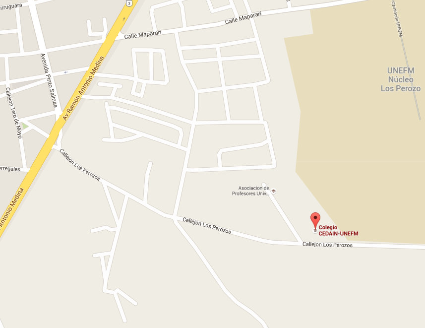

CEDAIN-UNEFM
Complejo docente UNEFM, Los Perozo. Sector Los Perozo. Parroquia San Gabriel, Municipio Miranda - Estado Falcón.
Coordenadas: 11.402952, -69.649234
También recomendamos (aún cuando no es un problema mayor) que como protección adicional traiga gorra o sombrero, protector solar, y repelente contra zancudos-mosquitos.
Así mismo, si gusta de comer entre horas, o usa algún edulcorante en vez de azúcar, por favor tome las previsones del caso.
